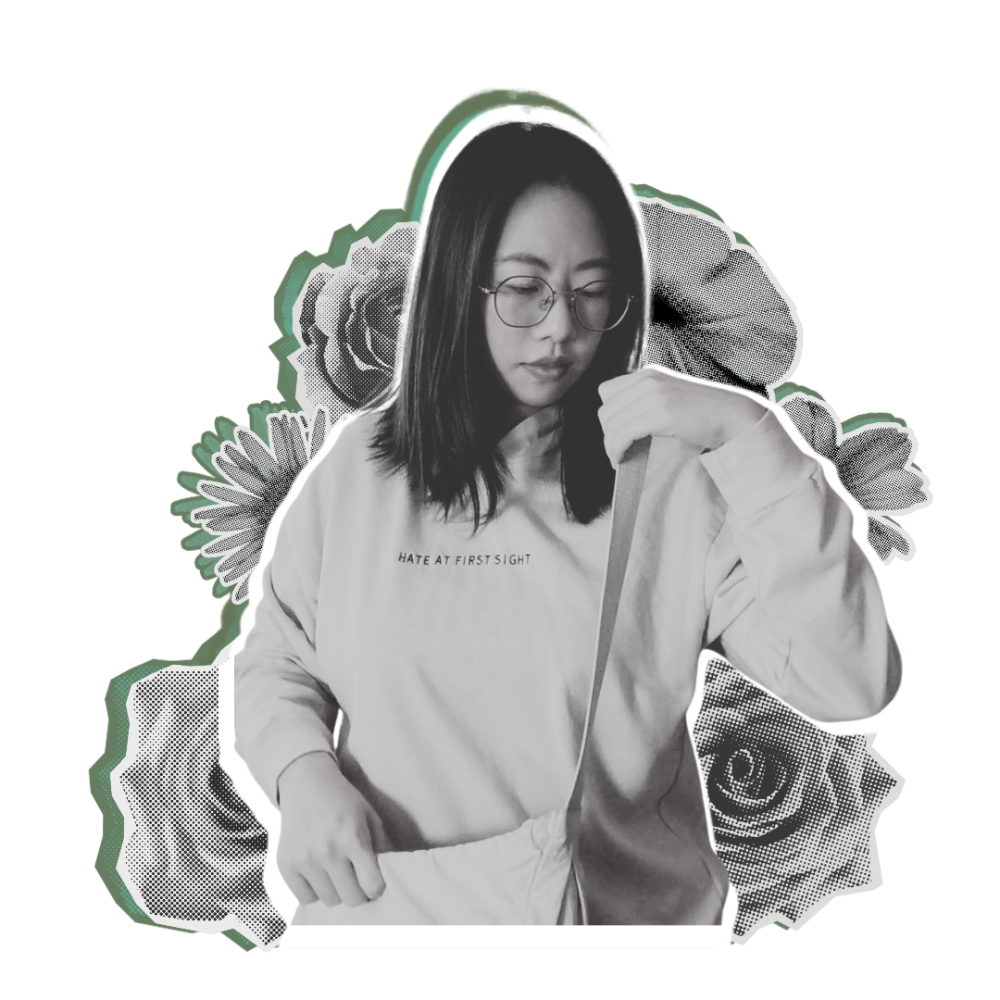
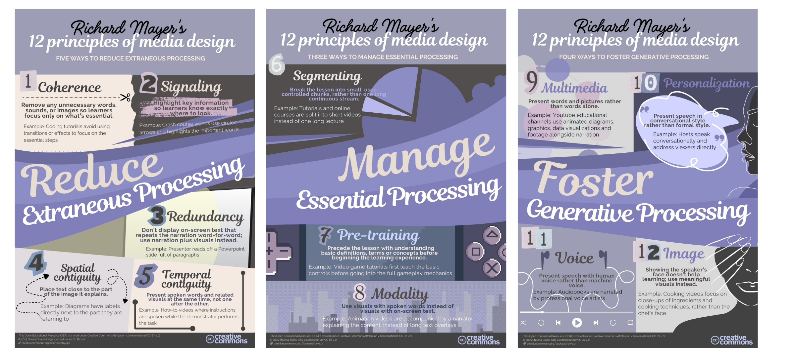
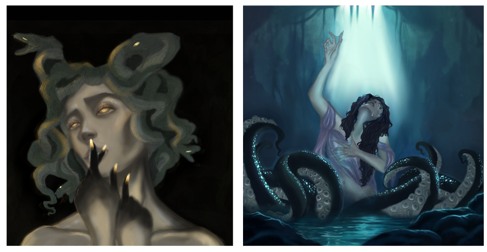
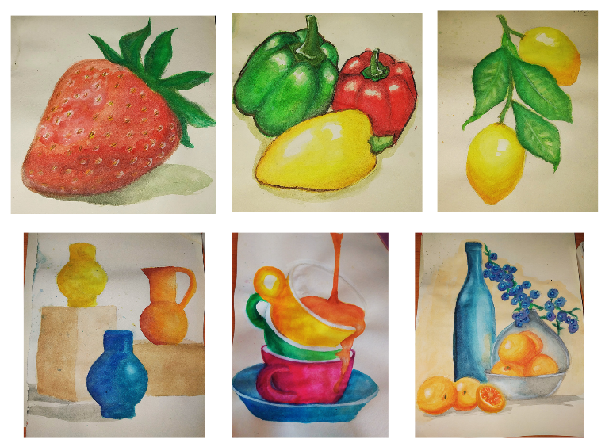

Pastels
Applied to aesthetics and design.
"ordinary details, infinite worlds"

Hi! I am Sheena, a sophomore Associate of Arts in Digital Design and Art student at the University of the Philippines - Open University.
An aspiring creative currently exploring Graphic Design, Digital Illustration, UI/UX Design, Video Editing, and Visual Storytelling.
A curious mind with a love for creative worlds.
Little things that inspire me and make life more interesting.
Applied to aesthetics and design.
As inspiration and self-expression.
Whether fiction, fantasy, or horror.
For the joy of it and for others.
A collection of creative explorations, visual storytelling, and projects I hope to build upon as I continue learning.

I enjoy visual storytelling through infographics. This is one of my favorite works, exploring how design and visual elements can make information more engaging and understandable.

A collection of digital illustrations reimagining the women wronged by Greek mythology—those who were turned into monsters, punished for the actions of others, or scorned by the gods and goddesses.

Last year (2025), we were tasked to learn (or, in my case, relearn) a skill that didn't involve anything digital. I chose watercolor painting, and here's how I progressed over three weeks!
Have a question or want to talk about creative ideas? I'd love to hear from you!
Contact Me →